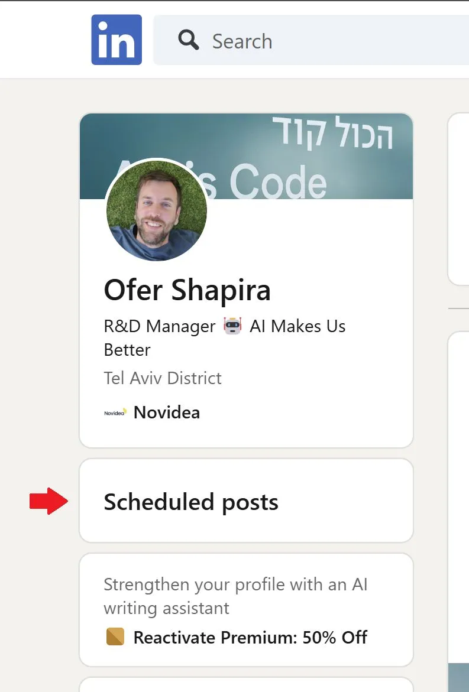

Adding personal website shortcuts with TamperMonkey
Originally posted on LinkedIn, February 17, 2025.
Website and WEB system interfaces may be sophisticated, but they have one problem: they are built for everyone, so they are not tailored to anyone. We keep repeating pointless actions like finding a verification code in Gmail, manually navigating to a specific LinkedIn page, or even filling out a timesheet.
Instead of continuing to adapt myself to the web, I decided to adapt the web to me. After a short conversation with ChatGPT, I discovered TamperMonkey, a browser extension that runs custom scripts on any website.
The process was simple:
- I identified where I wanted the button.
- I asked ChatGPT to write a script that added it.
- I made a few small fixes, and suddenly the internet worked for me.
The button now appears only for me on LinkedIn's home page. It makes it easier to view my posts, which I try to schedule and spread out so I do not post more than once a day.
This means I no longer have to accept web interfaces as they are. I can add exactly what I need.
